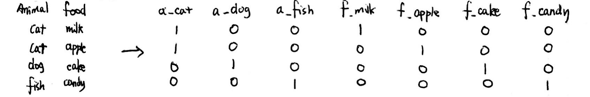
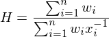
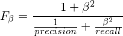
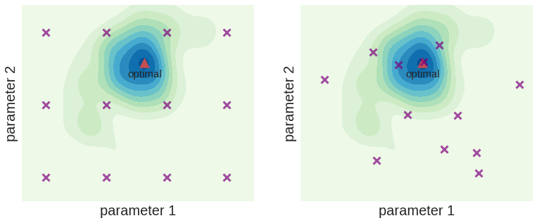

finding_donors目录


一次提交便通过了这个项目，这是一件很值得骄傲的事情．恭喜!
最后得到的Fbeta在0.72左右其实是很高的一个分数了．有人使用过相同的数据来进行建立预测模型的实验, 这些实验仅使用了准确率（误差）来评价, 推荐你看看里面 Interesting Finding 这个部分，作者使用了非机器学习的方法来得到了惊人的误差值0.065，你会意识到分析数据来源多么重要．
希望你在非监督学习过程依然愉快且收获丰富 : )
学生正确地计算了下列数值:
很好! 所有的结果都计算正确!
Pro Tips
另外, 我也想引入一个叫探索性数据分析(Exploratory Data Analysis)的概念. 有些人甚至认为机器学习中, 数据分析比数学原理更加重要(请看这里 : http://sharpsightlabs.com/blog/machine-learning-prerequisite-isnt-math/)
其中一个重要的手段是利用可视化来进行分析:
除了matplotlib, 为你介绍一个友好的, 美丽优雅的可视化伙伴, seaborn.
譬如, 这里可以进行factor plot来查看高收入阶层在各个特征上是如何分布的 (以婚姻状况为例).
import seaborn as sns
sns.set(style = 'darkgrid', color_codes = True)
sns.factorplot("income", col = "marital-status", data = data, kind = "count", col_wrap = 3)
学生正确地对特征和目标实现了独热编码。
代码运用很到位! 你成功地实现了独热编码!
Pro Tips
你会发现，one hot encoding 把原本紧凑的特征拆开，得到了一个极其稀疏的0 1矩阵．
以下举一个简单的例子,

想象一下，如果你某一个特征具有多的类目，将它们独热编码将会得到一个很大的稀疏矩阵，直接储存非常浪费空间．这时候我们自然会想到，储存矩阵的形状和１的位置就可以了呀．
scipy.sparse.csr_matrix就是这样的结构．这个储存方式在分布式大数据学习中应用广泛，你可以看看Apache Spark-pyspark部分里类似的数据结构 SparseVector进行了解.
学生正确的计算了简单预测的准确率和F1分数。
正确的计算! 完成得很好，但是建议为beta安排一个变量．
fscore = (1 + 0.5*0.5) * (precision * recall) / ((0.5*0.5) * precision + recall)
Pro Tips
不知道你在记忆Ｆbeta时有没有遇到过困难? 其实它的定义很自然．
Ｆbeta是precision和recall的加权调和平均(Weighted Harmonic Mean), 下面公式表示 x_i 到 x_n 的加权调和平均:

而Fbeta分数就是为precision赋权 １, 为recall赋权beta^2的调和平均．

特别地，当beta = 1时，将得到 Ｆ１分数:
学生解释了选择这几个模型的原因，并说明了每一个模型的优缺点。
质量很高的回答，markdown很到位!
Pro Tips
集成方法
你可以在这个项目中尝试 AdaBoost, Gradient Boosting, Random Forest 等集成算法．
其中, Gradient Boosting 是 Kaggle 比赛上很受欢迎的算法, 以下是一个 Kaggler 对GB的详细解释, 鼓励你去看看:
https://gormanalysis.com/gradient-boosting-explained/
以下这个网页对GB进行了极其badass的可视化:
http://arogozhnikov.github.io/2016/06/24/gradient_boosting_explained.html
更可以了解"加强版" Gradient Boost---ＸGBoost
http://machinelearningmastery.com/gentle-introduction-xgboost-applied-machine-learning/
如何开始着手解决一个机器学习问题? 如何选择模型? sklearn的算法地图清晰地指导你应该怎么开始:
http://scikit-learn.org/stable/tutorial/machine_learning_map/
此外，关于常见模型的优缺点，以下这个页面给了超级简单的总结:
http://www.lauradhamilton.com/machine-learning-algorithm-cheat-sheet
学生成功的实现了一个监督学习算法的流程。
很成功!
X_train.iloc[0:sample_size] 可以写为 X_train[:sample_size]
Pro Tips
学生正确的实现了三个监督学习模型，得出了模型表现可视化的图表。
Ａwesome!
在考虑了计算成本、模型表现和数据特点之后，学生选出了最好的模型并给出了充足的理由。
学生能够用清晰简洁的话来向一个没有机器学习或任何其他技术背景的人来解释最优模型的工作原理。
解释得很好!
Pro Tips
机器学习不仅仅需要建立模型, 在现实应用还需要将它呈现给客户或者其他领域的合作者看, 让他们对这个结果充分了解.
以下是一个Kaggler关于这方面的见解.
http://blog.kaggle.com/2016/06/13/communicating-data-science-an-interview-with-a-storytelling-expert-tyler-byers/
机器学习模型一般都有这三个要点要解释:
这是一个自顶向下的思路，你自己学习算法的时候也可以将这三个要点作坑，慢慢用数学原理和细节来填充．
最终模型利用了网格搜索进行参数调优，至少挑战了一个参数，并且至少有三个可选值。如果模型参数不需要任何调整，学生需要给出明确的理由。
你的调参很成功!
这里写得不是很好:
def fbeta_fuction(y_true, y_predict):
return fbeta_score(y_true,y_predict,beta=0.5)
scorer = make_scorer(fbeta_fuction)
可以直接写作:
scorer = make_scorer(fbeta_score, beta = 0.5)
查看make_scorer的官方定义:
sklearn.metrics.make_scorer(score_func, greater_is_better=True, needs_proba=False, needs_threshold=False, **kwargs)
beta对应了其中的**kwargs参数. **kwargs为可变参数,，在网上有很多解释，这里就不展开了. 这里beta 将会自动传给fbeta_score．
Pro Tips
在这里为你介绍另一种比较流行的调参方法, 它叫随机搜索(Randomized Search. 就是在给定的参数空间中随机的进行参数组合, 搜索. 这个调参方法往往比网格搜索更有效. 下图小山顶表示最优, 参数组合被表示成了平面上的点, 可以看出随机化的选取参数是让参数组合散落到最优附近的一个更有效策略.

以下这篇文章图文并茂地解释了两种算法. 鼓励你去看一下.
https://medium.com/rants-on-machine-learning/smarter-parameter-sweeps-or-why-grid-search-is-plain-stupid-c17d97a0e881
还有sklearn比较两者的专页:
http://scikit-learn.org/stable/auto_examples/model_selection/randomized_search.html#sphx-glr-auto-examples-model-selection-randomized-search-py
在这里, Randomized Search可以这样实现:
from sklearn.model_selection import RandomizedSearchCV
parameters = {'max_depth':range(1,16),'min_samples_split':range(2,100)}
rdm_obj = RandomizedSearchCV(clf,parameters,scoring=scorer, n_iter = 6)
学生在表格中正确汇报了调优过后、调优之前以及基准模型的准确率和 F1 分数。学生把最终模型的结果与之前得到的结果进行了对比。
学生列出了他们认为对预测个人收入最重要的5个特征，同时给出了选择这些特征的理由。
学生调用了一个监督学习模型的 feature_importances_ 属性。此外，学生列出了这些重要的特征并讨论了这些特征的相同点和不同点。
这里AdaBoost选出了未被独热编码的五个特征．很有意思．但是不同算法会有不同的结果．你可以查看你经过调优后的决策树的特征重要性．直接使用best_clf即可．
你提到的occupation还有其他特征没有出现在前五，很可能是因为这些是类目型特征，会被独热编码打散．
你可以查看子特征加起来的总特征重要性．
occupations = np.where(X_train.columns.str.contains('occupation'))
print "occupations importance:", np.sum(importances[occupations])
但注意这个操作算法上的意义不大，因为子特征已经成为了一个新的特征了．直接相加也不一定和算法的原理项符合．但是它可以给我们一个比较直观的体会．
另外你提到:
"capital-gain和capital-loss比较直接与收入相关，两者差值应该就是其收入净值"
你可以在美国国家税务局查看其解释:
https://www.irs.gov/chinese/%E4%B8%BB%E9%A1%8C409
学生用最重要的5个特征建模并分析了和对比了改模型与问题五中的最优模型的表现。
Good!